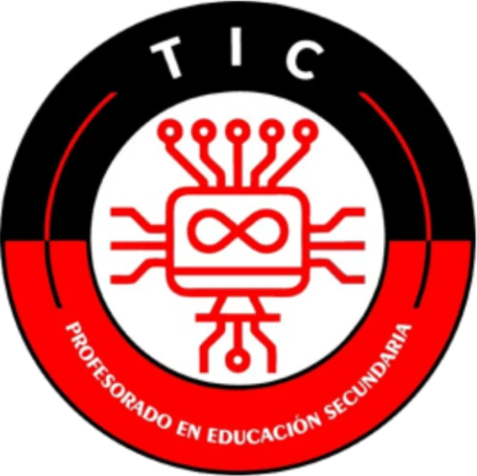

</>
Herramientas digitales
Alfabetización digital, redes, bases de datos y producción multimedia.
↗Convertí tu pasión por la tecnología en una forma de crear, enseñar y transformar la educación.

El Profesorado de Educación Secundaria en Tecnologías de la Información y la Comunicación forma profesionales capaces de integrar conocimientos pedagógicos, herramientas digitales y experiencias de aprendizaje significativas.
Duración de la carrera
Unidades curriculares
Horas reloj totales
Alfabetización digital, redes, bases de datos y producción multimedia.
↗Didáctica, diseño de materiales y proyectos educativos con TIC.
↗Creatividad, comunicación, innovación y trabajo interdisciplinario.
↗No necesitás tener todo resuelto: hay distintas formas de llegar al mundo de las TIC. Descubrí cuál se parece más a vos.
Te encanta descubrir cómo funcionan las tecnologías y buscar nuevas soluciones. En TIC podés convertir esa curiosidad en experiencias para enseñar.
TODOS LOS CAMINOS PUEDEN LLEVAR A TIC ✳El perfil del egresado incluye diseñar estrategias de enseñanza, producir recursos digitales, integrar tecnologías de manera crítica y acompañar los aprendizajes de estudiantes en diferentes contextos.
Conocé las materias y descubrí de manera visual qué necesitás para cursar, rendir o promocionar cada unidad curricular.
Tocá una materia para ver sus correlatividades. Diseñado también para pantallas pequeñas.
Conocé todas las unidades curriculares del Nivel Secundario donde tu título tiene competencia oficial Docente y Habilitante en la provincia de Jujuy.
Filtrá por modalidad o tocá un espacio curricular para ver orientación, curso, alcance y normativa vigente.
La enseñanza con TIC abre puertas a múltiples lenguajes, herramientas y nuevas formas de aprender.
Estos son los documentos indicados por el instituto para presentar al finalizar el cursillo. Podés ir marcándolos para organizarte.
Listado del tríptico institucional, confirmado como vigente para la carrera.
Acercate al IES N.º 9 «Juana Azurduy» y conocé más sobre el Profesorado TIC.
Atención presencial del instituto